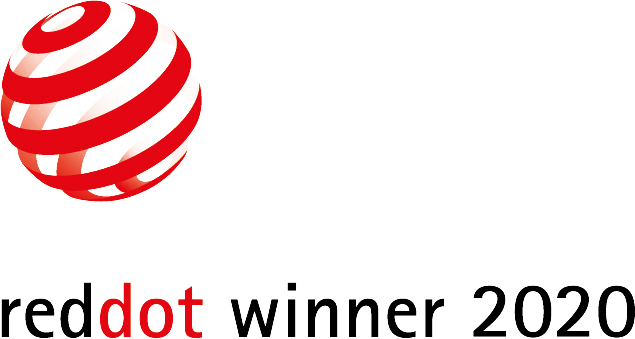
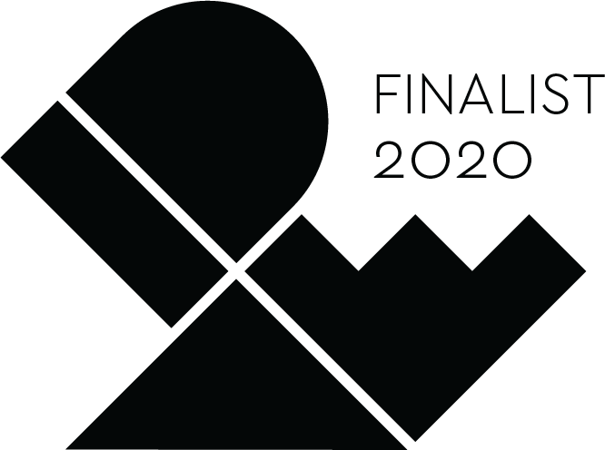
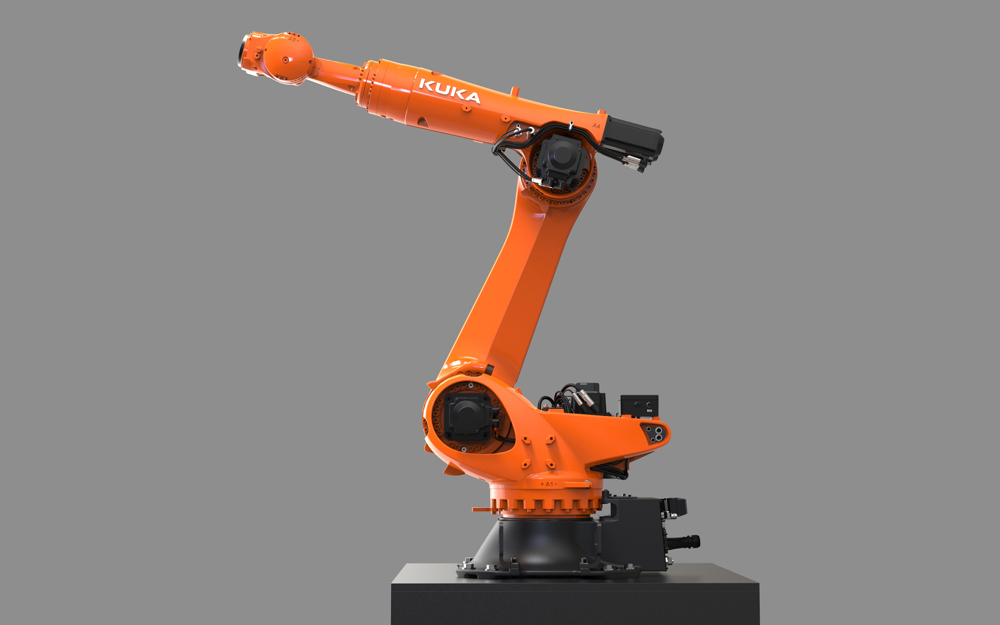
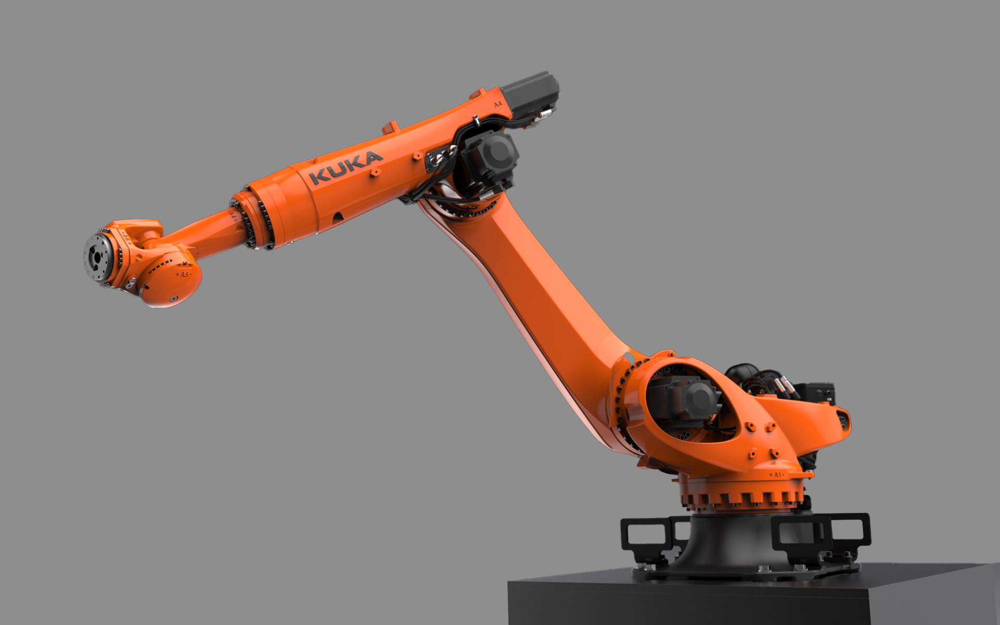
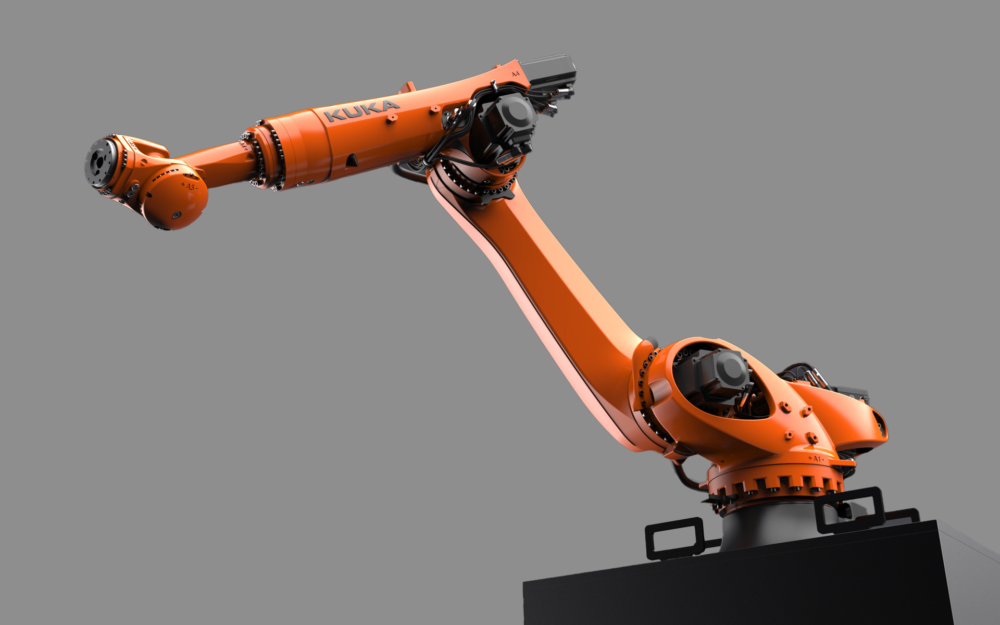

KUKA KR QUANTEC-2
Industrial Robot
KUKA KR QUANTEC-2
Industrieroboter
The robot KUKA KR QUANTEC-2 210 was developed robot for high-speed spot welding, assembly, packaging in the automotive industry and general industry.
Organically designed, powerful components give the robot a dynamic appearance and visualize the
performance and flexibility of the machine. At the same time, they mechanically ensure high transversal
strength and torsional rigidity, which is important for precise, reliable work. Flowing shape transitions
for high mechanical force flow and extreme physical dynamic properties.
The robot has no superfluous cladding elements - every component has its technical function. This robot
type can be mounted both on the floor and in the ceiling installation position. It is designed as a
long-term product - the average life is 15 years. The load capacity of the mountable tools is 210 kg,
its reach at 2700 mm.
Selić Industriedesign service: Design concept, design consultation, design sketches, CAD design support,
CAD freeform modeling, design refinement, processing of design data for the engineering department
Der Roboter KUKA KR QUANTEC-2 210 R 2700 wurde entwickelt für sekundenschnelles, hochpräzises Punktschweißen, Montieren, Verpacken in der Automotive Branche und allgemeine Industrie.
Organisch gestaltete, kraftvolle Bauelemente geben dem Roboter ein lebendiges Erscheinungsbild und
visualisieren die Leistungsfähigkeit und Beweglichkeit der Maschine. Zugleich sorgen sie mechanisch für
hohe Biegefestigkeit und Torsionssteifigkeit, wichtig für präzises, zuverlässiges Arbeiten. Fließende
Formübergänge für hohen mechanischen Kraftfluss und extremen physikalischen Dynamikeigenschaften.
Der Roboter kommt ohne überflüssige Verkleidungselemente aus - jedes Bauteil hat seine technische
Funktion. Er ist als Langzeitprodukt ausgelegt - die durchschnittliche Lebensdauer liegt bei 15 Jahren.
Die Traglast der montierbaren Werkzeuge beträgt 210 Kg, seine Reichweite bei 2700 mm.
Selić Industriedesign Dienstleistung: Designkonzept, Designberatung, Designentwürfe,
CAD-Designunterstützung, CAD-Freiform-Modellierung und Detailgestaltung, Aufbereitung von Designdaten
für die Konstruktion



Images © Selić Industriedesign